Keycloak Installation
On this page
- Create the Keycloak database
- Configure the Helm chart
- Deploy Keycloak
- Access the Keycloak admin interface
- Create the NBS realm
- Configure service clients
The Keycloak Helm chart provides authentication for modernization-api, nbs-gateway, data-ingestion-api, and nnd.
Create the Keycloak database
Any compatible SQL client can be used, including SQL Server Management Studio (SSMS).
- Using your SQL client, authenticate into the RDS instance where NBS is running:
- DB Endpoint – DB Endpoint
- Username –
admin - Password –
database_admin_password
-
Run the script below (from
<Helm extract directory>/charts/keycloak/nbs_keycloak.sql) to create the Keycloak database and database user. Replace'EXAMPLE_KCDB_PASS8675309'with a complex password that meets your organization’s standards. Store this password securely — you will need it in thevalues.yamlfile in the next section.use master IF NOT EXISTS(SELECT * FROM sys.databases WHERE name = 'keycloak') BEGIN CREATE DATABASE keycloak END GO USE keycloak GO BEGIN CREATE LOGIN NBS_keycloak WITH PASSWORD = 'EXAMPLE_KCDB_PASS8675309'; CREATE USER NBS_keycloak FOR LOGIN NBS_keycloak; EXEC sp_addrolemember N'db_owner', N'NBS_keycloak' ENDValidation: Keycloak database is created

Configure the Helm chart
-
In
{Helm extract directory}/charts/keycloak/values.yml, update the following parameters:Parameter Template Value Example / Description adminUser admin Keycloak admin account for the Web UI. Keep the template value or change to match organizational naming conventions. adminPassword EXAMPLE_KC_PASS8675309 Password for the Keycloak admin user. Use a complex password matching organizational standards. KC_DB mssql mssql KC_DB_URL jdbc:sqlserver://EXAMPLE_DB_ENDPOINT:1433;databaseName=keycloak;encrypt=true;trustServerCertificate=true; jdbc:sqlserver://mydbendpoint:1433;databaseName=keycloak;encrypt=true;trustServerCertificate=true; KC_DB_USERNAME NBS_keycloak Keycloak database account. Keep the template value or change to match organizational naming conventions. KC_DB_PASSWORD EXAMPLE_KCDB_PASS8675309 Must match the password set in step 2 of the previous section. efsFileSystemId EXAMPLE_EFS_ID EFS file system ID from the AWS console or CLI. Provides persistent storage for themes.
Deploy Keycloak
-
Authenticate to the EKS cluster:
aws eks --region us-east-1 update-kubeconfig --name <clustername> # e.g. cdc-nbs-sandbox -
From the charts directory, install the Keycloak Helm chart. This step takes at least 5 minutes while the init container becomes available. See the README in
Helm/charts/keycloakfor details.Helm install keycloak --namespace default -f keycloak/values.yaml keycloak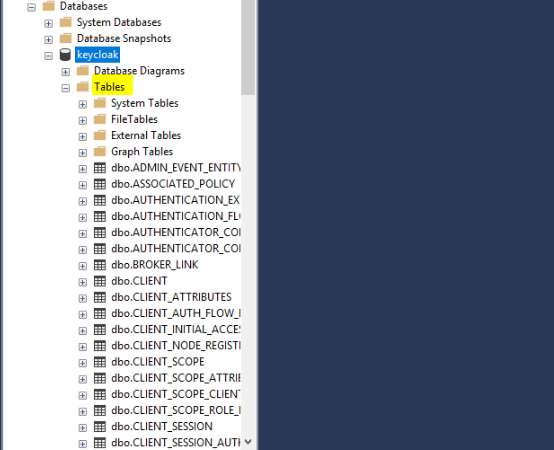
-
Verify the pod is running before proceeding:
kubectl get pods -n default
Access the Keycloak admin interface
Port forwarding is not supported by CloudShell by default. Run these commands from a system that has both network access to the EKS endpoint and a browser. If you completed the installation from CloudShell, switch to a jumpbox or desktop with network connectivity to the EKS endpoint.
-
Set up port forwarding:
export POD_NAME=$(kubectl get pods --namespace default -o name); echo "Visit http://127.0.0.1:8080/auth to use your application"; kubectl --namespace default port-forward "$POD_NAME" 8080; -
In a browser, navigate to http://127.0.0.1:8080/auth and select Administrative console.
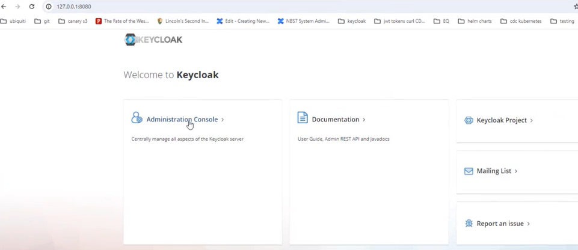
-
Sign in using the
adminUserandadminPasswordvalues configured in the Helm chart.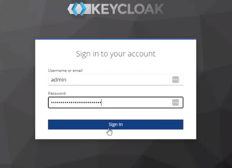
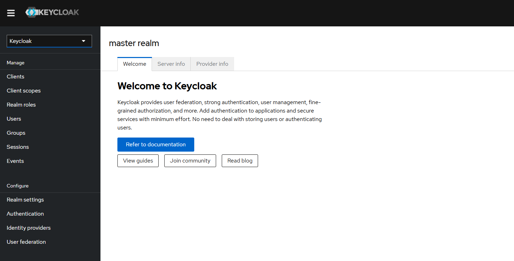
Create the NBS realm
-
Create a new realm to contain the NBS-specific client and user/group configurations.
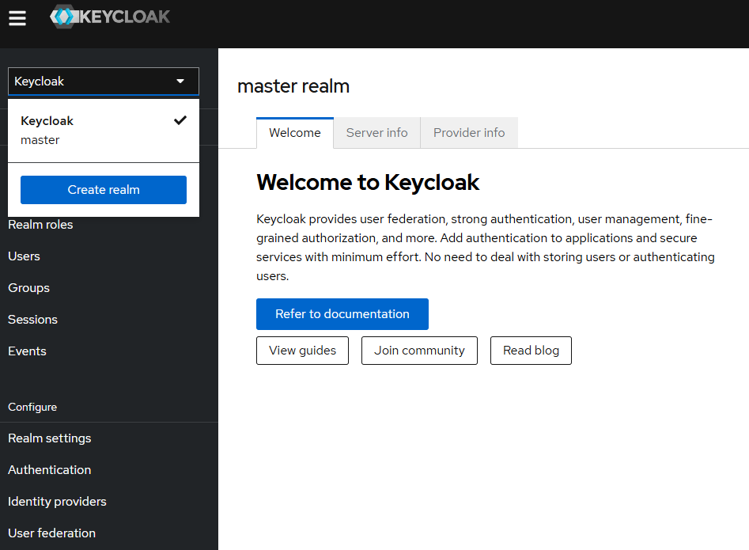
-
Upload
{Helm extract directory}/charts/keycloak/extra/01-NBS-realm-with-DI-client.jsonand click Create. This imports the NBS realm and clients.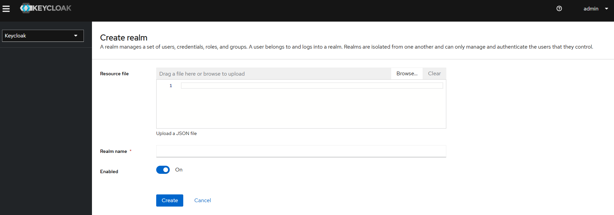
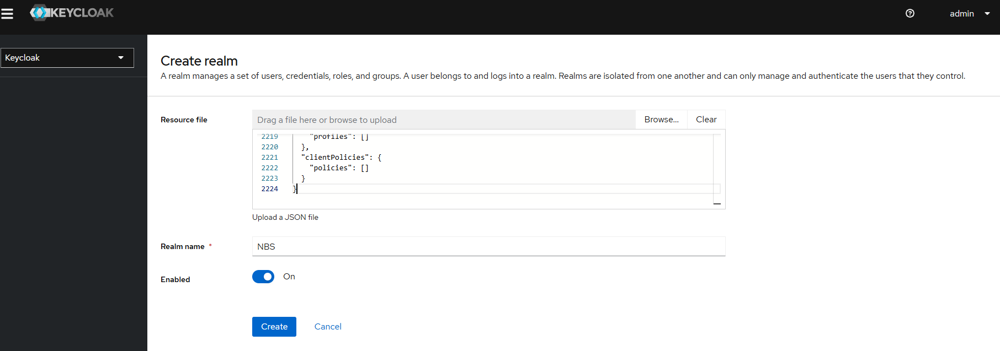
-
Verify the realm and clients are created successfully.
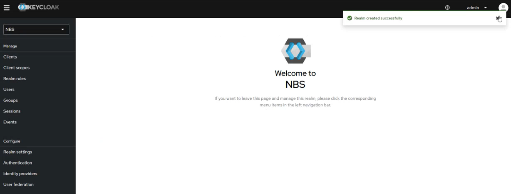
Configure service clients
The imported configuration seeds a random client secret for each service client. You may regenerate or use a secure local client secret. Repeat the import and retrieval steps below for each client.
DI client
- Navigate to the NBS Realm in the left menu and click Clients.
- Select
di-keycloak-clientand open the Credentials tab. - Click the eye icon to reveal the secret and copy it.
-
Store the secret for use by the applications (for example, in AWS Secrets Manager at
keycloak/client/secret/di).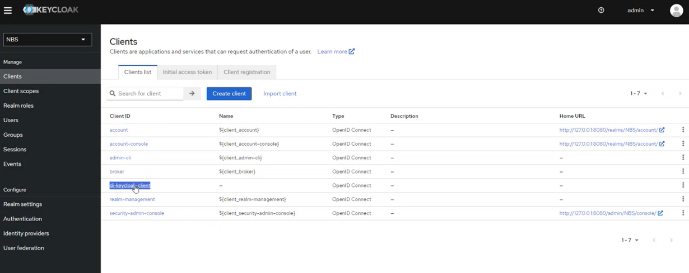

NND client
-
In the NBS Realm, open Realm settings, click the Action dropdown, and select Partial Import.
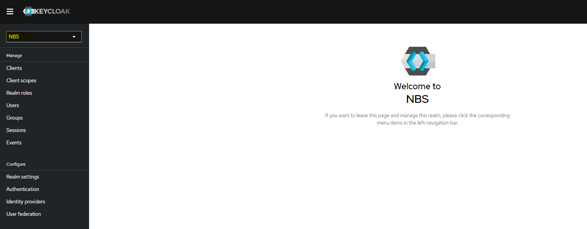
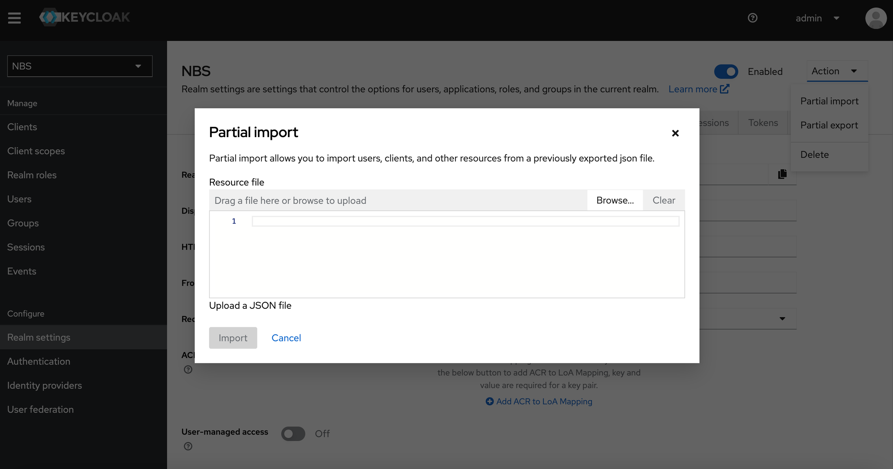
- Upload
<Helm extract directory>/charts/keycloak/extra/05-nbs-users-nnd-client.jsonand click Create. - Navigate to the NBS Realm in the left menu and click Clients.
- Select
nnd-keycloak-clientand open the Credentials tab. - Click the eye icon to reveal the secret and copy it.
-
Store the secret (for example, in AWS Secrets Manager at
keycloak/client/secret/nnd).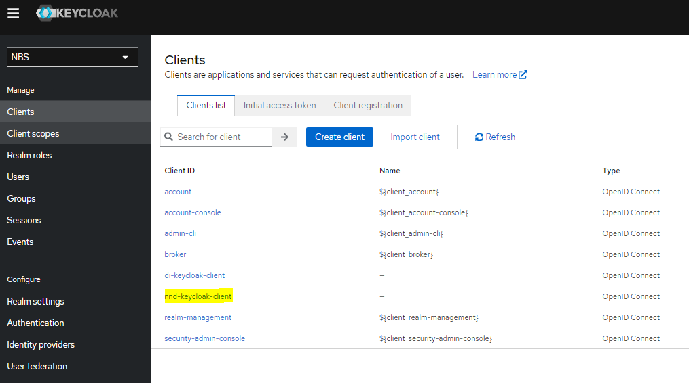
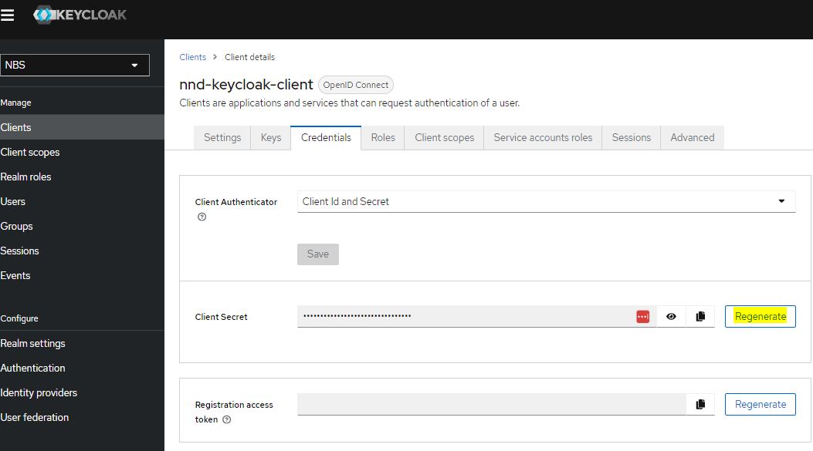
SRTE client
- In the NBS Realm, open Realm settings, click the Action dropdown, and select Partial Import.
- Upload
<Helm extract directory>/charts/keycloak/extra/06-nbs-users-srte-data-client.jsonand click Create. - Navigate to the NBS Realm in the left menu and click Clients.
- Select
srte-data-keycloak-clientand open the Credentials tab. - Click the eye icon to reveal the secret and copy it.
- Store the secret (for example, in AWS Secrets Manager at
keycloak/client/secret/srte).
XML-HL7 parser client
- In the NBS Realm, open Realm settings, click the Action dropdown, and select Partial Import.
- Upload
<Helm extract directory>/charts/keycloak/extra/10-nbs-users-xml-hl7-parser-service.jsonand click Create. - Navigate to the NBS Realm in the left menu and click Clients.
- Select
xml-hl7-parser-keycloak-clientand open the Credentials tab. - Click the eye icon to reveal the secret and copy it.
- Store the secret (for example, in AWS Secrets Manager at
keycloak/client/secret/xml-hl7-parser).